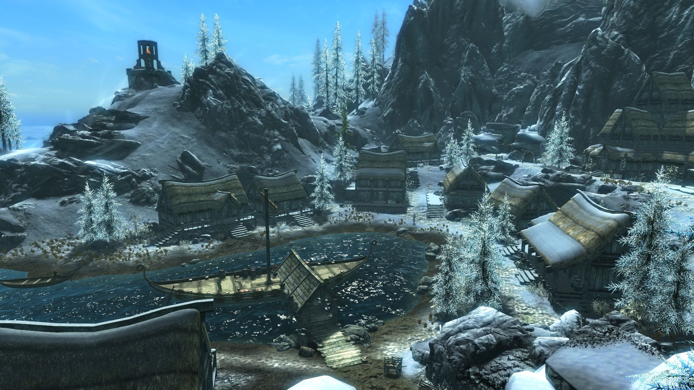
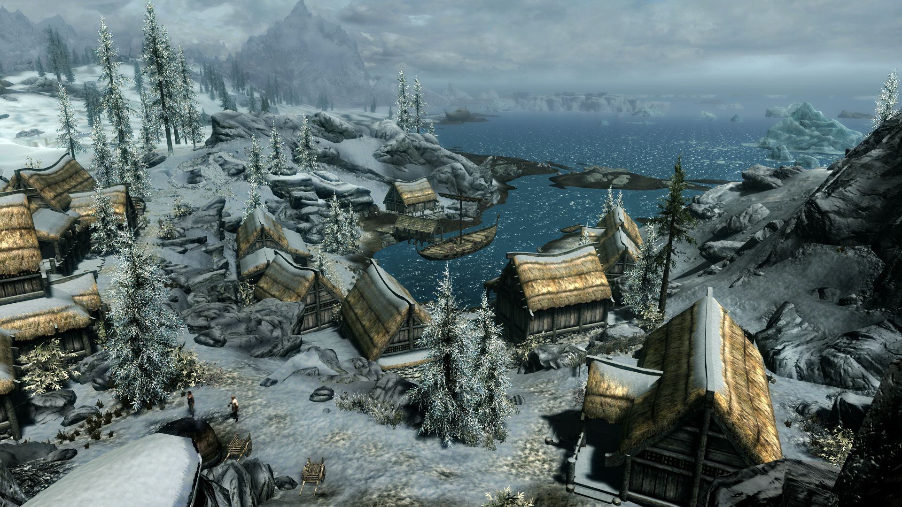
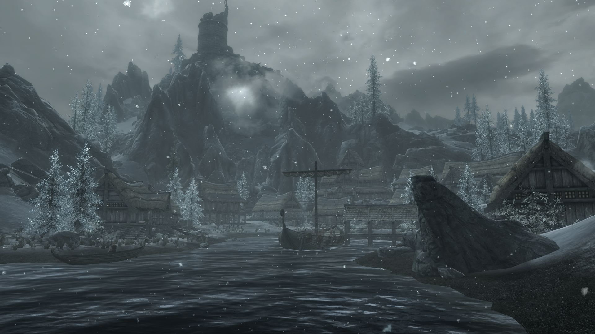
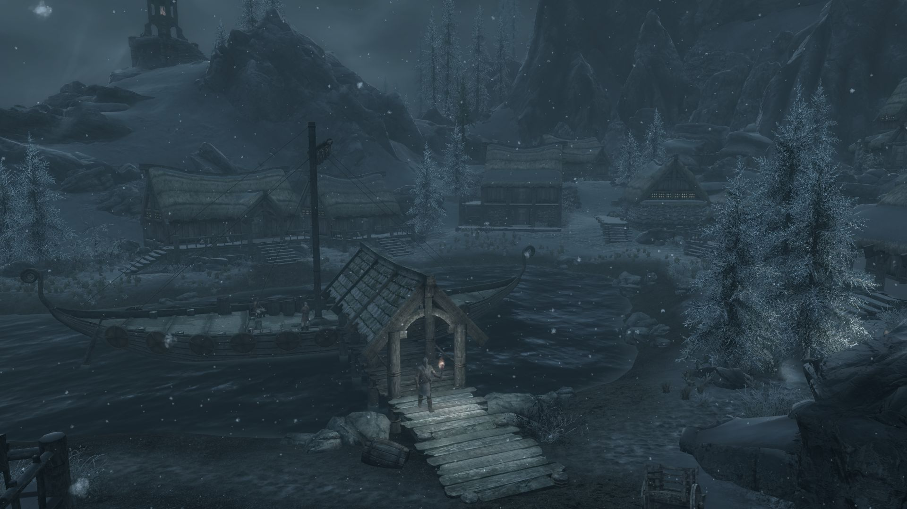
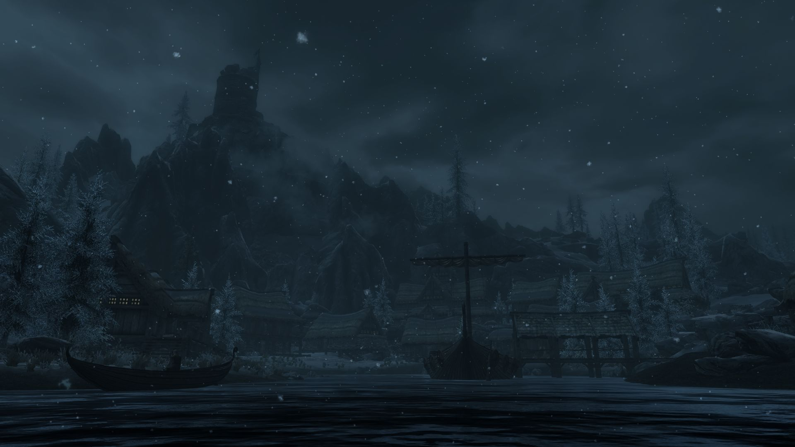
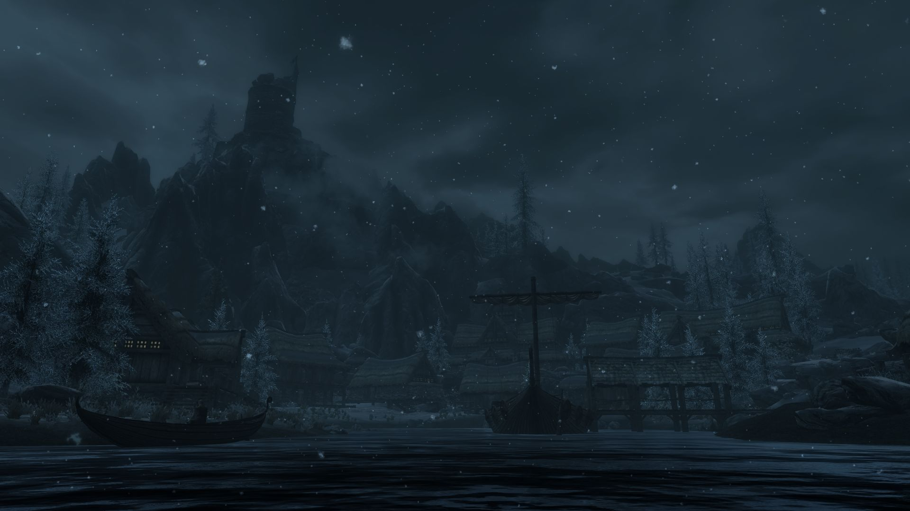

Histoire
La date de construction d'Aubétoile est inconnue, mais elle existe depuis au moins 1E 2920, comme mentionné dans le "2920, vol. 10 - Soufflegivre".
Après la destruction d'une forteresse à Aubétoile durant l'année 2E 283, le potentat Versidue-Shaie a déclaré la loi martiale, conduisant à l'une des périodes les plus brutales et sanglantes de l'histoire de Tamriel. Cela a conduit également à la création de la Guilde des guerriers, de la Guilde des mages et de la Guilde des voleurs à la promulgation de l'édit des guildes par le potentat.
Le village a été reconstruit au moins avant la fin de la Ère Troisième. Cependant, il est indiqué dans le "Guide de poche de l'Empire, Troisième édition : Bordeciel" que Macalla était la reine d'Aubétoile et avait épousé le roi Thian de Solitude.
Vers l'année 4E 201, les citoyens d'Aubétoile souffraient d'une série de cauchemars du Crâne de corruption. L'Enfant de Dragon et un ancien prêtre de Vaermina, un Dunmer nommé Érandur, sont allés au temple de Sorguevoix et ont mis fin aux souffrances de la ville.
Troisième édition: Bordeciel
Localisations
Services
- Auberge Montvent
- La Panacée
- Maison de Rustleif
Maisons
- Maison d'Irgnir
- Maison de Beitild
- Maison de Brina
- Maison de Fruki
- Maison de Leigelf
- Maison de Silus Vésuius
Gouvernement
- Le pavillon blanc - résidence du jarl
- Baraquements d'Aubétoile
Autres
- Mine de Brise-Fer
- Mine de Vif-Argent
- Le Bourrasque
Personnages
| Le Nom | L'Occupation | Maison |
| Abélone | Servante à l'auberge Montvent | Auberge Montvent |
| Alding | Pirate des Horqueurs sanguinaires | Auberge Montvent |
| Alésan | Enfant orphelin | Auberge Montvent |
| Beitild | Propriétaire de la mine de Brise-Fer | Maison de Beitild |
| Bodil | Mineure | Mine de Brise-Fer |
| Borgny | Mineur | Mine de Vif-Argent |
| Brina Mérilis | Membre de la Légion impériale | Maison de Brina |
| Bulfrek | Servant du jarl | Le pavillon blanc |
| Capitaine Nautonier | Capitaine du Bourrasque | Bourrasque |
| Édith | Mineure | Mine de Vif-Argent |
| Érandur | Prêtre de Mara | Auberge Montvent |
| Frida | Alchimiste et propr. de la Panacée | La Panacée |
| Frorkmar Terne-Bannière | Commandant sombrage du Clos | Le pavillon blanc |
| Fruki | Mineure | Maison de Fruki |
| Gjak | Mineur | Mine de Brise-Fer |
| Gjuk | Pirate des Horqueurs sanguinaires | Auberge Montvent |
| Guthrum | Marin | Le Bourrasque |
| Le Nom | L'Occupation | Maison |
| Harlaug | Navigateur | le bateau en baie |
| Horik Mi-Main | Garde du corps de Brina Mérilis | Maison de Brina |
| Irgnir | Mineur | Maison d'Irgnir |
| Irlof | Pirate des Horqueurs sanguinaires | Auberge Montvent |
| Jod | Huscarl du jarl Skald l'Aîné | Le pavillon blanc |
| Karita | Barde de l'auberge Montvent | Auberge Montvent |
Alentours
Les meilleures vues sur Aubétoile
    
